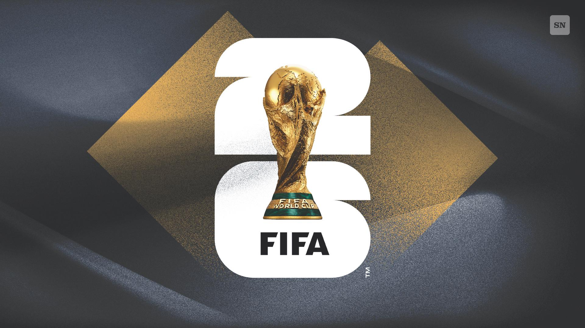

WC Predictor
🌙
Asian handicap analysis & prediction engine based off
Kimi to predict all 104 World Cup matches
.
Kimi's Agent Swarm coordinates 300 sub-agents to reason in parallel
· 277-page report
⏱
Rambo Action ·
Last sync: —
Select Team A
vs
Select Team B
For each handicap row, enter the home and away odds.
The engine scores all 6 bets (3 lines × 2 sides) and ranks them by value.
Handicap
e.g. -0.5, +0.25
Team A (Home)
odds
Team B (Away)
odds
Clear
Analyze
Report Overview
277
pages ·
114
tables
62.5%
backtest (2018/22)
300
agents ·
20
dimensions
Most probable final:
ARG-ESP 2.72%
48
teams ·
104
matches
ⓘ
Group-stage travel
:
3,400km (NOR) – 28,000km (AUS)
Analysis History
No predictions yet. Enter a match above.
Data stored in this browser only. Export to keep predictions across devices.
Export
Import
Clear All
Tournament Context
3rd-place qualifying:
4pts=98%
3pts+GD≈75%
3pts≈50%
2pts<10%
Monte Carlo finals:
ARG-ESP 2.72%
ARG-FRA 2.16%
ENG-ESP 1.83%
Travel range:
3,400km (NOR) – 28,000km (AUS)
ⓘ
Format:
39 days
104 matches
16 cities
4 timezones
Prediction Data Structure
Team profile (48 teams):
FIFA rank · Elo rating · win rate · goals for/against · AH cover rate · form · cards · injuries · manager · squad age · travel distance · group qual % · title prob · semi/QF prob · Polymarket odds · market divergence · home advantage · momentum
Match-level:
head-to-head win/draw/loss % (Kimi) · upset probability · match prediction confidence
Tournament-level:
group stage format · 8-match champion path · third-place thresholds · venue altitude · heat risk · travel fatigue · 16-city climate · Monte Carlo bracket sims · historical backtest calibration
v1.05
▼
— Rambo Action · Auto-sync 4x daily · FIFA API + LiveScore + Football-data.org · Shots, cards, fouls, late goals, H2H, goal splits